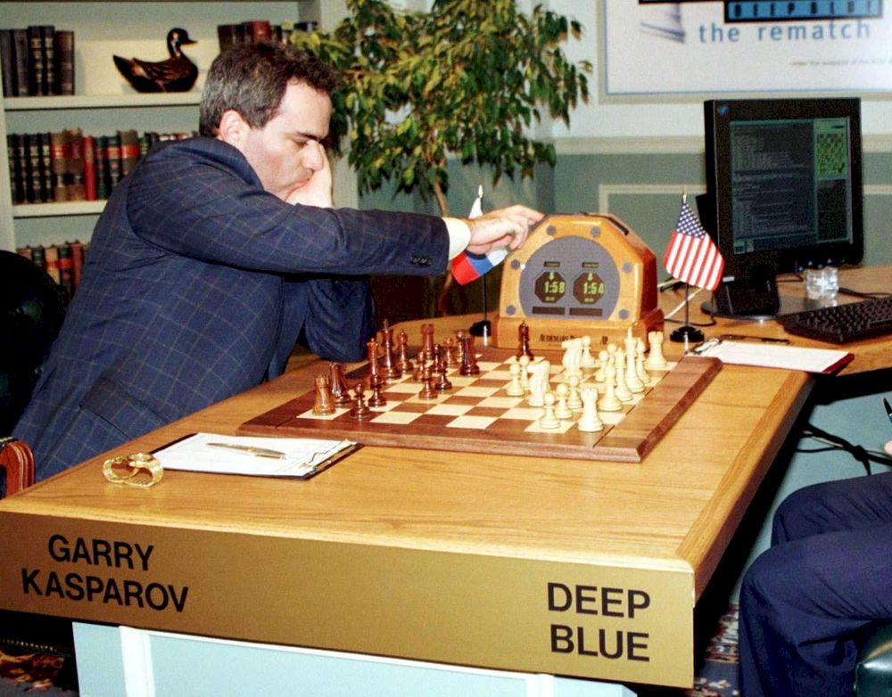

La historia de la IA se remonta a mediados del siglo XX, pero el concepto de máquinas pensantes ha existido durante siglos. Resumen de los hitos clave:
-
1943: Warren McCulloch y Walter Pitts proponen el primer modelo matemático para redes neuronales artificiales, sentando las bases para el aprendizaje automático.

-
1950: Alan Turing, un pionero de la informática, introduce el Test de Turing, una prueba para determinar si una máquina puede exhibir un comportamiento inteligente indistinguible del de un ser humano.

-
1956: Se celebra la conferencia de Dartmouth, considerada el nacimiento oficial de la IA como campo de estudio. En esta conferencia, John McCarthy acuñó el término "inteligencia artificial".

- Decada de 1970: Los primeros sistemas expertos, como MYCIN en el campo de la medicina, se desarrollan para ayudar en la toma de decisiones diagnósticas. Sin embargo, la limitada capacidad de procesamiento y los altos costos frenaron su expansión.
- Decada de 1990: Deep Blue, una supercomputadora desarrollada por IBM, derrota al campeón mundial de ajedrez Garry Kasparov en 1997, marcando un hito en la IA aplicada a juegos estratégicos. 
- 2010 en adelante: Los avances en el aprendizaje profundo y la disponibilidad de grandes cantidades de datos (big data) han llevado a una nueva era en la IA, con aplicaciones que abarcan desde la visión por computadora hasta el reconocimiento de voz.
Recientemente, en los ultimos 4 años, la inteligencia artificial ha experimentado una revolución impulsada por el desarrollo de modelos avanzados como ChatGPT, Copilot, DALL·E y otros sistemas generativos. Estas herramientas han llevado la IA a un nivel completamente nuevo, especialmente en los campos de la generación de lenguaje natural, el desarrollo asistido de software, y la creación de contenido visual.
Generación de Lenguaje Natural (NLP)
Una de las áreas más disruptivas ha sido el avance en los modelos de lenguaje natural, específicamente aquellos basados en transformers, como los modelos de la familia GPT (Generative Pre-trained Transformer), con ChatGPT como uno de sus productos más visibles. En esta categoría también se encuentran otros modelos como BERT y T5, que se usan en tareas relacionadas con la comprensión del lenguaje.
ChatGPT (2020 en adelante)
Desarrollo:ChatGPT fue desarrollado por OpenAI y ha tenido un crecimiento explosivo desde su lanzamiento inicial. A partir de GPT-3 (2020), ChatGPT ha alcanzado una capacidad sin precedentes para generar y entender texto en lenguaje natural. Con GPT-4, lanzado en 2023, la capacidad de razonamiento y la habilidad para gestionar tareas complejas de lenguaje han mejorado de manera considerable.
Aplicaciones: ChatGPT se utiliza en aplicaciones que van desde la atención al cliente automatizada hasta la generación de contenido en marketing y medios digitales. También ha sido clave en la educación en línea, con herramientas que ayudan a estudiantes y profesionales a resolver problemas y a aprender de manera más interactiva.
Impacto: Ha permitido que empresas y usuarios particulares puedan interactuar con sistemas capaces de entender contexto y generar respuestas coherentes en tiempo real, lo que ha disminuido la necesidad de intervención humana en muchas áreas.
Programación Asistida por IA
Otra de las grandes revoluciones de la IA en los últimos años ha sido la programación asistida por IA. Herramientas como GitHub Copilot, también desarrollada en colaboración con OpenAI, han transformado cómo los desarrolladores crean y depuran código.
Github Copilot (2021)
Desarrollo: Copilot es una herramienta de autocompletado de código basada en el modelo GPT, que ofrece sugerencias en tiempo real mientras los programadores escriben código. Utiliza grandes cantidades de datos provenientes de repositorios públicos en GitHub para generar fragmentos de código.
Aplicaciones: Ayuda a los desarrolladores a escribir código más rápido, sugiere soluciones a problemas comunes, y permite la automatización de tareas repetitivas de programación. También es capaz de generar código a partir de descripciones en lenguaje natural.
Impacto: Ha mejorado significativamente la productividad en el desarrollo de software, permitiendo que los programadores se enfoquen en problemas más complejos mientras la IA maneja tareas rutinarias. Además, ha democratizado el desarrollo, ayudando a programadores menos experimentados a escribir código de alta calidad.
Generación de imagenes y Arte con IA
Otro ámbito de enorme crecimiento ha sido la creación de imágenes, arte y gráficos mediante inteligencia artificial. Modelos como DALL·E, también de OpenAI, han abierto nuevas fronteras en la creatividad digital.
DALL·E (2021 en adelante)
Desarrollo: DALL·E es un modelo generativo basado en el mismo enfoque de transformers que GPT, pero especializado en la creación de imágenes a partir de descripciones de texto. La segunda versión, DALL·E 2, lanzó mejoras notables en la resolución y coherencia de las imágenes generadas.
Aplicaciones: DALL·E permite a los usuarios generar imágenes completamente originales a partir de descripciones textuales. Esto ha sido de gran valor en áreas como el diseño gráfico, la publicidad, la producción multimedia y la creación de prototipos visuales.
Impacto: Ha permitido que tanto profesionales creativos como aficionados puedan generar contenido visual único sin necesidad de habilidades avanzadas en diseño gráfico. Esto ha democratizado el acceso a la creación artística y ha tenido un gran impacto en la industria del diseño, marketing y entretenimiento.
Generación de Video y Modelos Multimodales
Más recientemente, la combinación de IA para el manejo de texto, imágenes y video ha dado lugar a lo que se conoce como modelos multimodales, capaces de interactuar con diferentes tipos de datos y generar contenido combinado.
Modelos multimodales (2023 en adelante)
Desarrollo: A partir de GPT-4, que comenzó a integrar capacidades multimodales, la IA ha sido capaz de procesar texto e imágenes simultáneamente. Esto permite aplicaciones como la descripción de imágenes en tiempo real o la creación de interfaces que permiten conversaciones basadas tanto en texto como en contenido visual.
Aplicaciones: Se están utilizando para generar videos, presentaciones, y experiencias interactivas que combinan texto, audio, y gráficos. Además, están comenzando a aplicarse en campos como la educación, la medicina y el entretenimiento.
Impacto: La capacidad de generar contenido dinámico y adaptativo basado en diferentes tipos de datos está cambiando la forma en que las empresas producen contenido multimedia, abriendo nuevas oportunidades para la personalización y la creación de experiencias inmersivas.